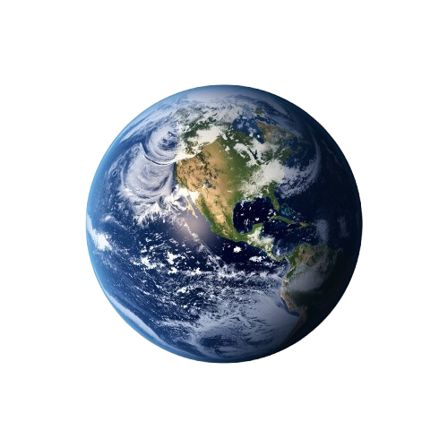
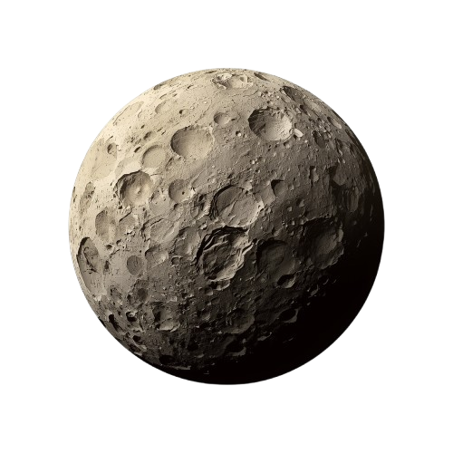
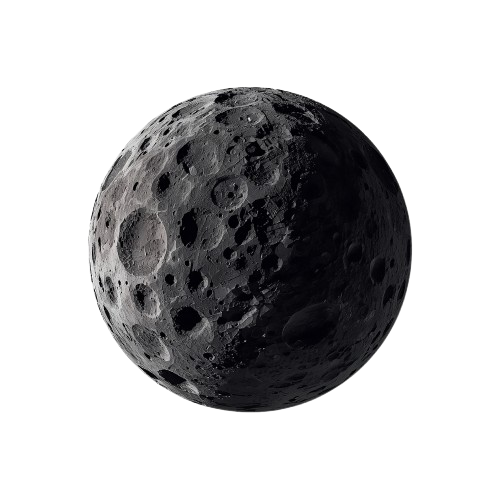
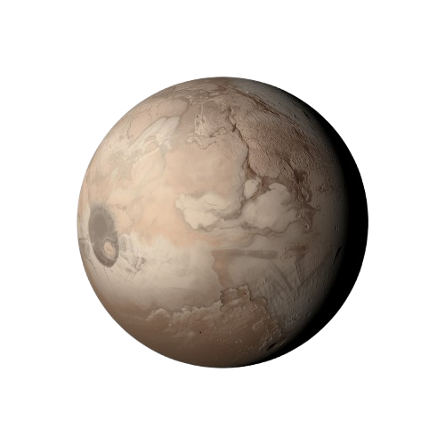
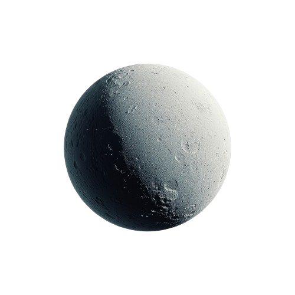
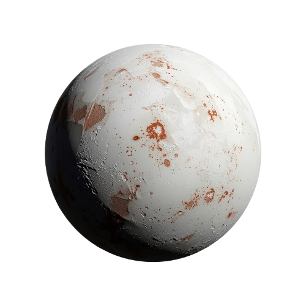
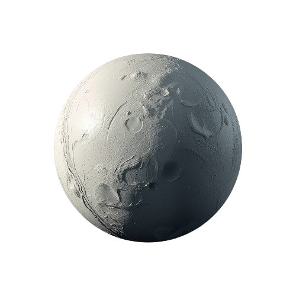
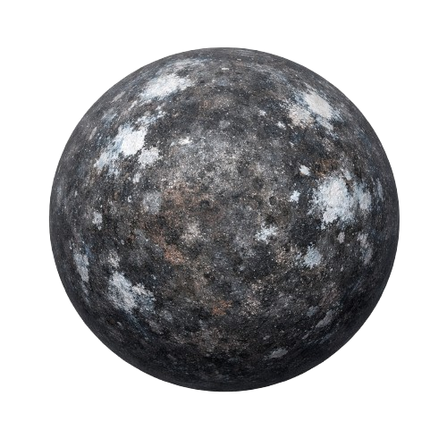
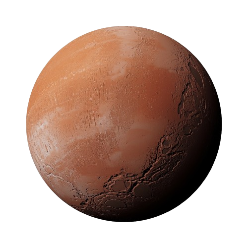

Карликовая планета - это небесное тело, которое обращается вокруг Солнца, имеет достаточную массу для поддержания круглой формы, но не смогло расчистить свою орбиту от других объектов.
Долгое время мы знали только об одной планете за Нептуном - Плутоне, открытом Клайдом Томбо в 1930 году. Но в начале 2000-х годов астрономы начали находить другие крупные объекты в поясе Койпера. В 2005 году команда Майка Брауна открыла Эриду, которая оказалась даже массивнее Плутона. Это открытие поставило вопрос: считать ли все новые объекты планетами или пересмотреть само определение?
В 2006 году Международный астрономический союз (МАС) принял историческое решение. Плутон был "разжалован", и был создан новый класс небесных тел - карликовые планеты. Плутон, Эрида, Макемаке и Хаумеа стали первыми её представителями. В список также включили Цереру, которая находится гораздо ближе - в поясе астероидов.
За исключением Цереры, все известные карликовые планеты находятся в поясе Койпера - ледяном кольце за орбитой Нептуна. Это самые дальние, холодные и наименее изученные миры нашей Солнечной системы. Изучение этих объектов помогает нам понять, как формировалась Солнечная система миллиарды лет назад.


Церера
Орк
Плутон
Хаумеа
Макемаке
Эрида
Квавар
Гунгун